Selected work
across brands
Visual design
since 2016
브랜드의 개성을 살리고 메시지를 명확하게 전달한 작업들 —
웹사이트와 웹진, 뉴스레터, SNS 콘텐츠까지13 projects · 2020–2026
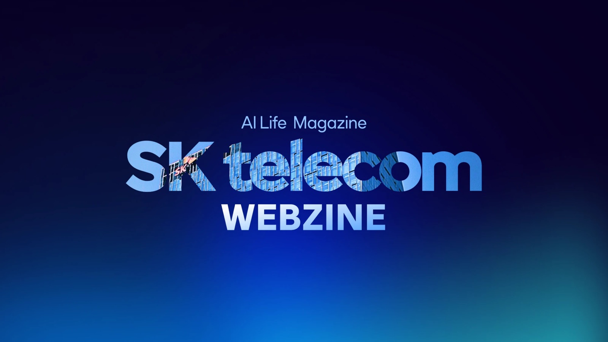
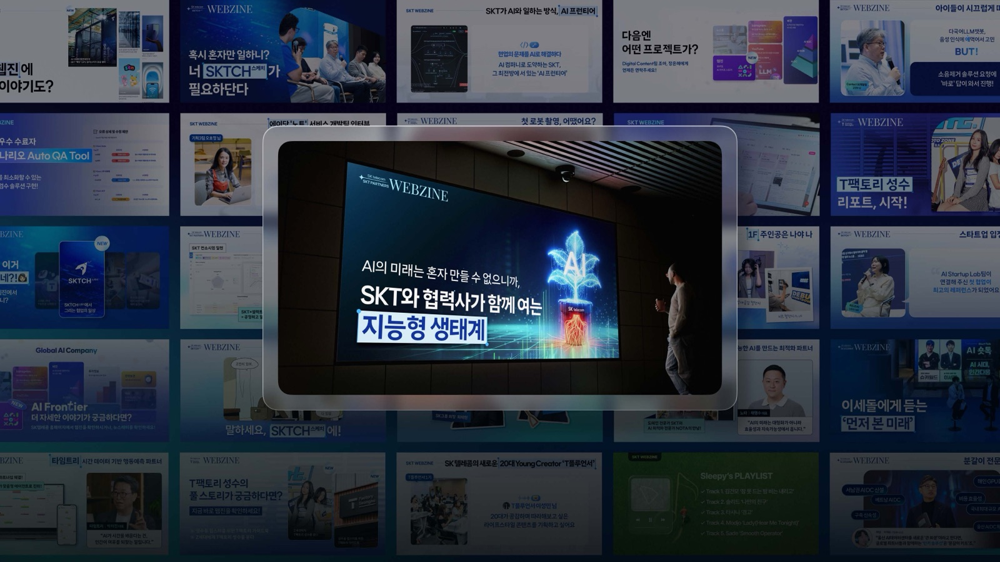
SK telecom ‘AI Life Magazine’
AI 기술과 비즈니스 이야기를 시각화한 웹진 콘텐츠 디자인
2025–2026 / Webzine

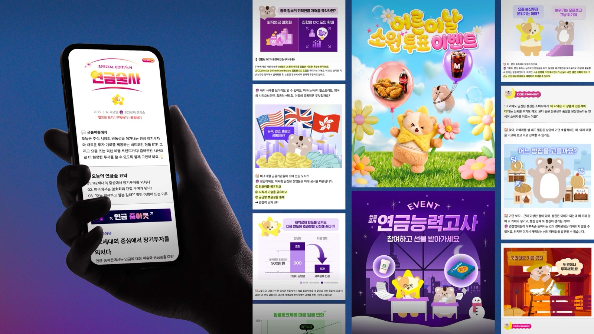
키움투자자산운용 ‘연금술사’
연금 정보를 친근하게 전달하는 뉴스레터·캐릭터 리뉴얼
2024–2026 / Newsletter

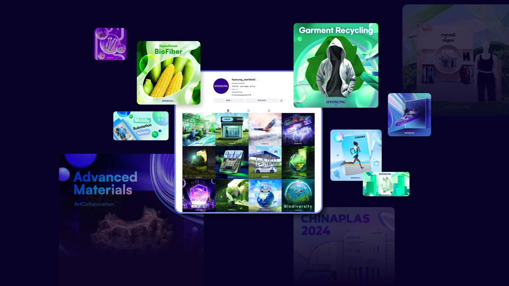
HYOSUNG SNS
지속가능성 메시지를 담은 키비주얼·채널별 SNS 콘텐츠 디자인
2024–2025 / Social
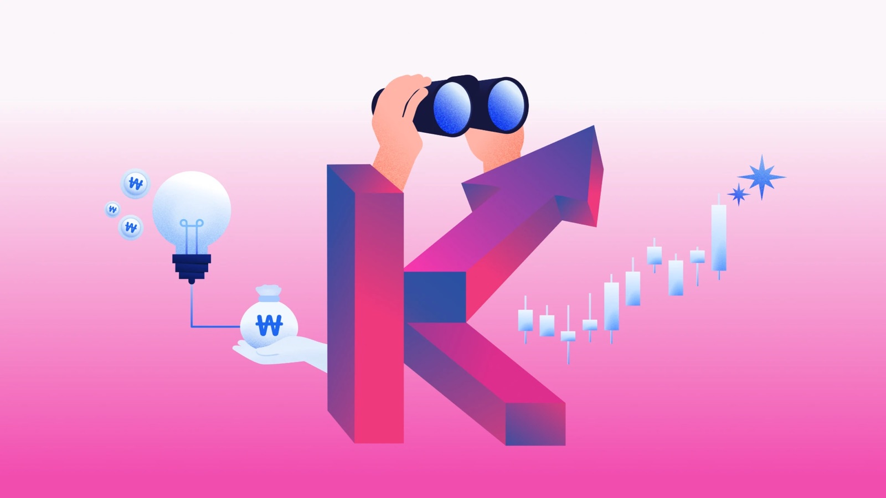
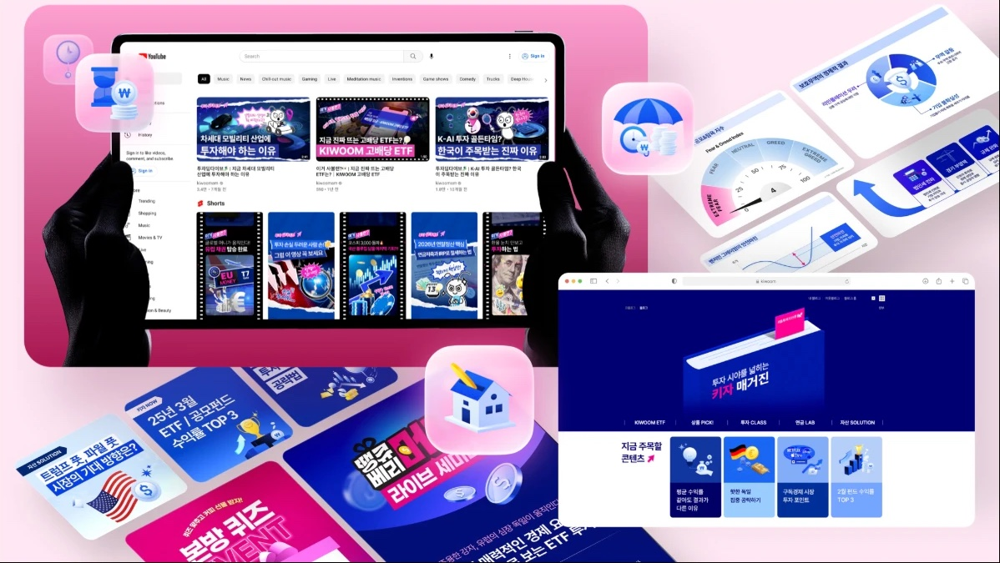
키움투자자산운용 SNS
블로그·유튜브·인스타그램 콘텐츠 디자인
2025–2026 / Social
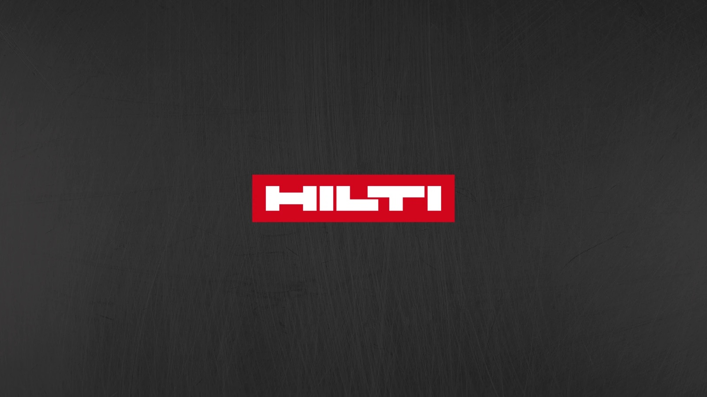
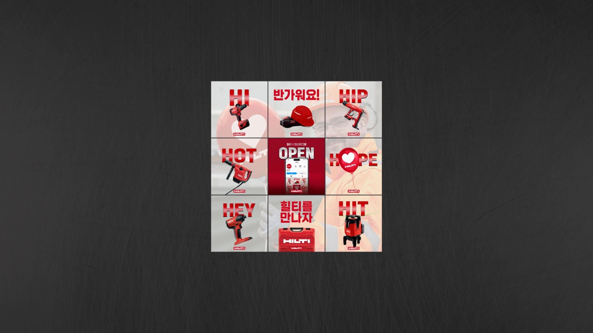
HILTI KOREA SNS
SNS 콘텐츠 · 광고 소재 디자인
2023 / Social

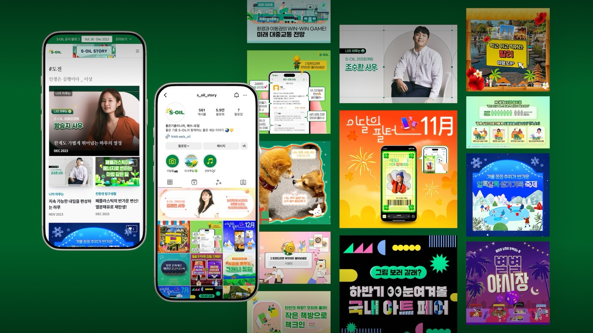
S-OIL SNS
ESG·사내 PR 인스타그램 콘텐츠
2023 / Social
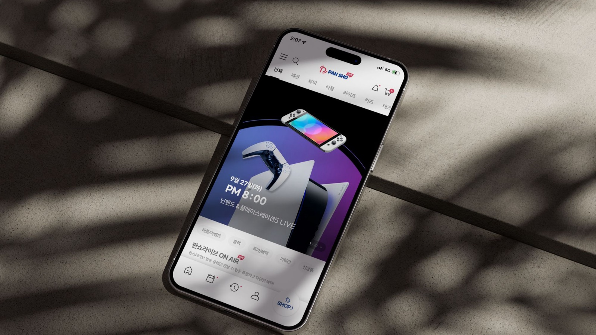
판쇼라이브
앱 UI · 라이브 배너 · 기획전·이벤트 디자인
2022 / Commerce UI
미니쉬치과병원
디지털 광고 · SNS · 원내 홍보물 디자인
2021–2022 / Brand Content
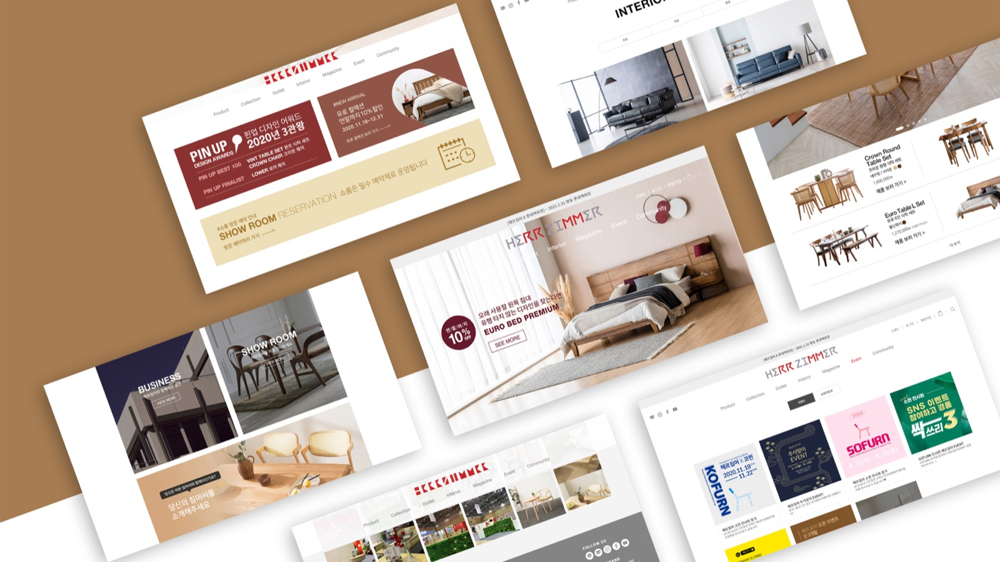
헤르짐머
가구 브랜드 자사몰 구축 및 상품·프로모션 콘텐츠 디자인
2020 / Commerce Web